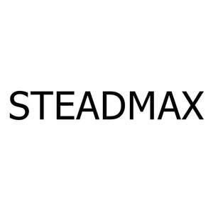

Trade Mark Journal No.2025/026 27 June 2025
UK00004217709 11 June 2025 (16,17,21,22)

- Class 16
- Adhesive tape dispensers [office requisites]; Adhesive tape dispensers for household or stationery use; Adhesive tapes for stationery or household purposes; Adhesive packing tape for stationery or household use; Drawer liners of paper, perfumed or not; Drawer liners made of scented paper; Notebook paper; Notebooks; Paper; Ruled paper; General purpose plastic bags; Holders for adhesive tapes; Paper notebooks; Plastic or paper bags for household use; Spiral-bound notebooks. Paper and cardboard; paper and cardboard for packaging and wrapping purposes, cardboard boxes; paper towels; toilet paper; paper napkins; plastic materials for packaging and wrapping purposes; printing blocks and types; bookbinding material; printed publications; printed matter; books, magazines, newspapers, bill books, printed dispatch notes, printed vouchers, calendars; posters; photographs [printed]; paintings; stickers [stationery]; postage stamps; stationery, office stationery, instructional and teaching material [except furniture and apparatus]; writing and drawing implements; artists' materials, paper products for stationery purposes; adhesives for stationery purposes, pens, pencils, erasers, adhesive tapes for stationery purposes, cardboard cartons [artists' materials], writing paper, copying paper, paper rolls for cash registers, drawing materials, chalkboards, painting pencils, watercolors [paintings]; paint rollers and paintbrushes for painting.
- Class 17
- Adhesive tape for industrial and commercial use; Adhesive tape for industrial or commercial packing use; Adhesive tape for sealing cartons for industrial or commercial use; Adhesive tapes, other than stationery and not for medical or household purposes; Rubber, gutta-percha, gum, asbestos, mica and semi-finished synthetic goods made from these materials in the form of powder, bars, panels and foils included in this class; insulation, stopping and sealing materials: insulation paints, insulation fabrics, insulating tape and band, insulation covers for industrial machinery, joint sealant compounds for joints, gaskets, O-rings for sealing purposes (other than gaskets for motors, cylinders and washer for water taps); flexible pipes made from rubber and plastic; hoses made of plastic and rubber, including those used for vehicles; junctions for pipes of plastic and rubber; pipe jackets of plastic and rubber; hoses of textile material; junctions for pipes, not of metal; pipe jackets, not of metal; connecting hose for vehicle radiators.
- Class 21
- Gloves for household purposes; Insect traps; Toilet brushes; Toilet plungers; Tub brushes; Disposable gloves for home use; Gardening gloves; Household gloves for general use; Household plastic gloves; Rubber household gloves; Work gloves. Hand-operated non electric cleaning instruments and appliances, brushes, other than paintbrushes, steel chips for cleaning, sponges for cleaning, steel wool for cleaning, cloths of textile for cleaning, gloves for dishwashing, non-electric polishing machines for household purposes, brooms for carpets, mops; toothbrushes, electric toothbrushes, dental floss, shaving brushes, hair brushes, combs; non-electric household or kitchen utensils, included in this class, [other than forks, knives, spoons], services [dishes], pots and pans, bottle openers, flower pots, drinking straws, non-electric cooking utensils; ironing boards and shaped covers therefor, drying racks for washing, clothes drying hangers; cages for household pets, indoor aquariums, vivariums and indoor terrariums for animals and plant cultivation; ornaments and decorative goods of glass, porcelain, earthenware or clay namely statues, figurines, vases and trophies; perfume burners, perfume sprayers, perfume vaporizers, electric or non-electric make-up removing appliances, powder puffs, toilet cases; unworked or semi-worked glass, except building glass, mosaics of glass and powdered glass for decoration, except for building, glass wool other than for insulation or textile use.
- Class 22
- Ropes; Ropes and synthetic ropes; Twine; Baling twine: Ropes; strings; rope ladders; hammocks; fishing nets; tents; awnings; tarpaulins; sails; vehicle covers, not fitted, bags of textile, for packaging; padding and stuffing materials not of rubber, paper or plastic, including those of wool and cotton, textile fibers; raw spun fiber; glass fibers for textile use. .
MIENNA INC
Representative: MON IP LTD